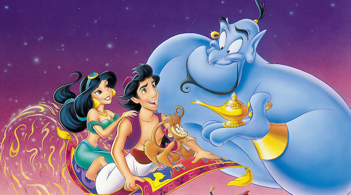

Aladdin

A kindhearted street urchin and a power-hungry Grand Vizier vie for a magic lamp that has the power to make their deepest wishes come true.
Storyline
Aladdin is a poor street urchin who spends his time stealing food from the marketplace in the city of Agrabah. His adventures begin when he meets a young girl who happens to be Princess Jasmine, who is forced to be married by her wacky yet estranged father. Aladdin's luck suddenly changes when he retrieves a magical lamp from the Cave of Wonders. What he unwittingly gets is a fun-loving genie who only wishes to have his freedom. Little do they know is that the Sultan's sinister advisor Jafar has his own plans for both Aladdin and the lamp.Details
Duration: 1h 30minRelease Date: November 25, 1992 (United States)
Genre: Animation · Family · Fantasy
Directors: Ron Clements · John Musker
Starring: Robin Williams · Scott Weinger · Linda Larkin